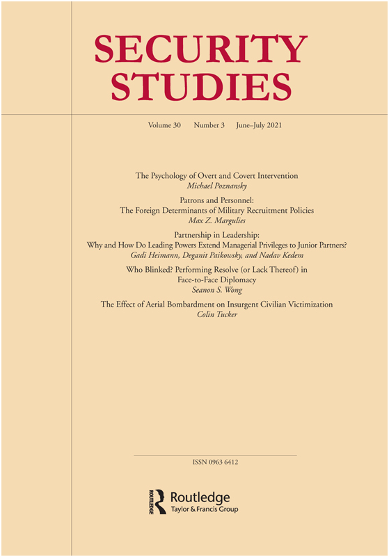
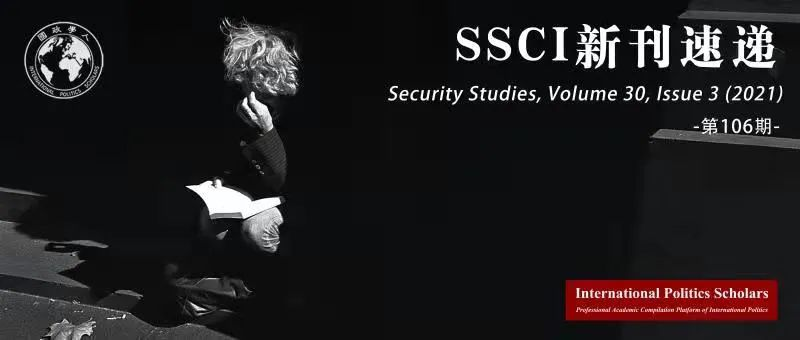

收录于合集
#安全研究 1 个
#新刊速递 123 个
#Security Studies 2 个

期刊简介

《安全研究》( Security Studies )收录并出版具有创新性的学术稿件——无论是理论研究、实践经验分享还是两者兼而有之。安全研究包含广泛的议题，涵盖核扩散、核威慑、军民关系、战略文化、种族冲突、流行病与国家安全、民主政治、外交决策以及定性与多方法研究的发展。根据Journal Citation Reports显示，其2019年的影响因子为2.167。

本期目录
1.公开和秘密干预的心理学
The Psychology of Overt and Covert Intervention
2.赞助人和人员：军事招募政策的外国决定因素
Patrons and Personnel: The Foreign Determinants of Military Recruitment Policies
3.领导中的伙伴关系：领导权力为什么以及如何将管理特权扩展到初级伙伴？
Partnership in Leadership: Why and How Do Leading Powers Extend Managerial Privileges to Junior Partners?
4.谁眨眼了？在面对面外交中表现出决心（或缺乏决心）
Who Blinked? Performing Resolve (or Lack Thereof) in Face-to-Face Diplomacy
5.空袭对叛乱平民受害的影响
The Effect of Aerial Bombardment on Insurgent Civilian Victimization
01
公开和秘密干预的心理学
题目： The Psychology of Overt and Covert Intervention
作者： Michael Poznansky（美国海军战争学院副教授）
摘要： 一国公开干预以强制推行外国政权往往是一项冒险的工作。如果推行成功，该国可以取代或挽救现有政权，赋予新政权决心。但公开干预也可能引发问题的大规模升级，激起民族主义浪潮，损害国家声誉。尽管人们逐渐认识到国家往往更倾向于采取隐蔽行动来避免负面责任，但领导人有时还是会选择公开行动。公开行动的原因是什么呢？基于“损失规避”的概念，本文认为，领导人对风险的容忍度取决于目标是推翻外国政权还是支持外国政权。根据预期收益，挽救政权接近于规避损失，因此领导人更可能采取风险干预策略，而不是改变政权。上述分析框架有助于解释为什么领导人在挽救外国政权时更可能接受公开行动的风险，而在推翻外国政权时更可能采取秘密行动。文章使用艾森豪威尔政府在叙利亚（1956-1957年）的秘密政权更迭行动和在黎巴嫩（1958年）的公开行动的案例，以评估这一理论。
Overt interventions to forcibly promote regimes abroad are often a risky undertaking. If successful, they can replace or rescue regimes and signal resolve in the process. But open meddling can also trigger large-scale escalation, incite nationalist backlash, and harm a state’s reputation. Despite an emerging consensus that states often prefer covert action to avoid these liabilities, leaders sometimes opt for overt action anyway. Why? Drawing on the concept of loss aversion, this article argues that leaders’ tolerance for risk differs depending on whether the goal is to overthrow a foreign regime or prop one up. Because regime rescue approximates loss prevention, leaders are more likely to pursue risky intervention strategies than they are to change regimes, a prospective gain. This framework helps explain why leaders are more likely to accept the risks of overt action when saving a foreign regime and more likely to go covert when deposing one. I evaluate this theory using the Eisenhower administration’s covert regime change efforts in Syria (1956–57) and overt regime rescue attempts in Lebanon (1958).
02
赞助人和人员：军事招募政策的外国决定因素
题目： Patrons and Personnel: The Foreign Determinants of Military Recruitment Policies
作者： Max Z. Margulies（宾夕法尼亚大学博士候选人）
摘要： 为什么有些州发展征兵制，而另一些州则依靠志愿者？大多数军事设计理论将国内精英描述为基于理性的安全需求或对军队理解的文化理解做出决策。与这些解释相反，许多面对军队建设挑战的国家都依赖强大的军事赞助人。军事赞助人对如何设计“客户国家”的军队有着强烈的信念。当正在建设新军队的国家有外国军事赞助人时，他们很可能会效仿其赞助人的招募做法。有足够兴趣和意愿参与安全部队援助的赞助人利用他们的影响力来塑造新国家或冲突后国家的招募实践。本文描述了军事赞助的动力，因味军事赞助与招募决定有关。本文使用了原始定量数据和简短的案例比较来支持文章论点。
Why do some states develop conscript armies, whereas others rely on volunteers? Most theories of military design describe domestic elites as making decisions based on rational security demands or cultural understandings of what a military should look like. Contrary to these explanations, many states faced with the challenge of building a military are dependent on powerful military patrons with strong beliefs about how to design their clients’ militaries. When states that are building new militaries have foreign military patrons, they are likely to emulate their patron’s recruitment practices. Patrons with sufficient interest and will to engage in security force assistance use their influence to shape recruitment practices in new or postconflict states. This article describes the dynamics of military patronage as they relate to recruitment decisions and finds support for the argument using both original quantitative data and a brief case comparison.
03
领导中的伙伴关系：领导权力为什么以及如何将管理特权扩展到初级伙伴？
题目: Partnership in Leadership: Why and How Do Leading Powers Extend Managerial Privileges to Junior Partners?
作者 : Gadi Heimann（希伯来大学）, Deganit Paikowsky（希伯来大学） &Nadav Kedem（巴黎政治学院）
摘要: 本文试图解释各国在获得专属管理论坛一席之地方面取得的全部或部分成功，以及由此带来的管理特权。我们认为，加入专属论坛并获得特权的能力取决于三个因素：潜在初级伙伴的资产对论坛领导者的吸引力；潜在初级伙伴与主要大国的团结程度；以及主要大国通过其他国家新成员受论坛授权获得合法性的能力。上述论点由两个案例证明：英国通过从美国获得非正式特权，在20世纪40年代末在一定程度上实现了一体化。十年后，法国未能实现制度化融合，拒绝满足于非正式特权。
This article seeks to explain states’ success, either full or partial, in obtaining a place in an exclusive managerial forum and the managerial privileges this entails. We argue that the ability to join an exclusive forum and gain these privileges depends on three factors: the extent to which the potential junior partners’ assets seem attractive to the forum’s leaders; the extent of potential junior partners’ solidarity with the leading powers; and the leading powers’ ability to obtain legitimacy for including new members from the other states subject to the authority of the forum. These arguments are demonstrated through an examination of two test cases: the United Kingdom’s partial success in achieving integration at the end of the 1940s by gaining informal privileges from the United States, and France’s failure to gain institutionalized integration a decade later and its refusal to be satisfied with informal privileges.
04
谁眨眼了？在面对面外交中表现出决心（或缺乏决心）
题目： Who Blinked? Performing Resolve (or Lack Thereof) in Face-to-Face Diplomacy
作者： Seanon S. Wong（香港中文大学副教授）
摘要： 领导者通常在面对面互动中脱颖而出。在一个有争议的问题上，领导者对于坚定和退让有着深刻的理解。这是如何实现的呢？在本文中，作者提出了决心履行理论。作者认为决心的表达是言语行为，领导者必须在口头和行动上展现决心。成功的（或言语行为理论称之为“恰到好处”的）表演也取决于对方的反应。由于他们对各自的表现有着共同的主体间信念，即谁占上风，谁“眨了眨眼”——关于他们如何处理争议问题的“焦点”经常出现。作者详细阐述了领导者用来展示决心的几种言语行为（威胁、言外之意、断言和挑战），并以1961 年 6 月约翰·肯尼迪和尼基塔·赫鲁晓夫在维也纳举行的两天会晤为案例，证明了作者的理论。领导人离开峰会时的焦点是肯尼迪犹豫不决，而赫鲁晓夫有勇气在柏林采取行动。作者讨论了该焦点如何导致两个超级大国之间的紧张局势升级，以及面对面外交在国际政治中的因果意义。
Leaders often emerge from a face-to-face interaction with an implicit understanding on who is expected to stand firm and, conversely, to back down, on a disputed issue. How is that possible? In this article, I develop a theory of resolve performance. I argue that expressions of resolve are speech acts. To establish resolve, leaders must perform such acts competently, there and then, both verbally and behaviorally. A successful (or what speech act theory calls “felicitous”) performance also depends on the reaction of one’s counterpart. By virtue of the intersubjective belief they share about their respective performances—who has carried the day and who has “blinked”—a “focal point” often arises regarding how they are expected to proceed on the disputed issue. I elaborate on several types of speech acts leaders use to perform resolve (threats, implicatures, assertions, and challenges), and illustrate my theory with an in-depth case study on the two days of meetings between John F. Kennedy and Nikita Khrushchev in Vienna in June 1961. The leaders left the summit with the focal point that Kennedy was irresolute and Khrushchev was emboldened to make a move on Berlin. I discuss how such a focal point led to escalation of tensions between the two superpowers and what can be learned about the causal significance of face-to-face diplomacy in international politics.
05
空袭对叛乱平民受害的影响
题目： The Effect of Aerial Bombardment on Insurgent Civilian Victimization
作者： Colin Tucker（纽约州立大学布法罗分校博士生）
摘要： 人们对空袭如何影响叛乱分子对平民的行为知之甚少。本研究提供的证据表明，反叛乱部队对伊拉克和叙利亚伊斯兰国的空袭是其平民受害的促成因素。本文的理论是，空袭扩大了叛乱分子死亡人数的分布范围，将更高级别的成员包括在内，同时也对其战斗人员造成心理伤害。因此，这些变化在组织和个人层面放松了对平民虐待的限制。这一理论基于 ISIS 叛逃者的采访和 ISIS 文件的翻译，通过对 ISIS 叛乱期间空袭和单方面暴力的细粒度数据的统计分析等到验证。本文的发现有助于我们了解叛乱分子的行为，并为使用空袭作为反叛乱(COIN)工具提供重要的政策启示。
Little is known about how air strikes influence insurgent behavior toward civilians. This study provides evidence that air strikes against the Islamic State of Iraq and Syria (ISIS) by counterinsurgency forces were a contributing factor in its civilian victimization. I theorize that air strikes expanded the distribution of insurgent fatalities to include higher-echelon membership and, at the same time, imposed psychological impairments on its fighters. As a consequence, these changes relaxed restraints on civilian abuse at the organizational and individual levels. This theory is informed by interviews of ISIS defectors and translations of ISIS documents and tested through a statistical analysis of granular-level data on air strikes and one-sided violence during ISIS’s insurgency. These findings contribute to our knowledge of insurgent behavior and provide important policy implications in the use of air strikes as a counterinsurgency (COIN) tool.
编译 | 缪高意
责编 | 唐一鸣 赵旌宏
排版 | 胡蝶

国政学人
支持学术公益与知识传播
微信扫一扫赞赏作者 __赞赏
已喜欢，对作者说句悄悄话
取消 __
发送给作者
发送
最多40字，当前共字
上一页 1/3 下一页
长按二维码向我转账
支持学术公益与知识传播
受苹果公司新规定影响，微信 iOS 版的赞赏功能被关闭，可通过二维码转账支持公众号。